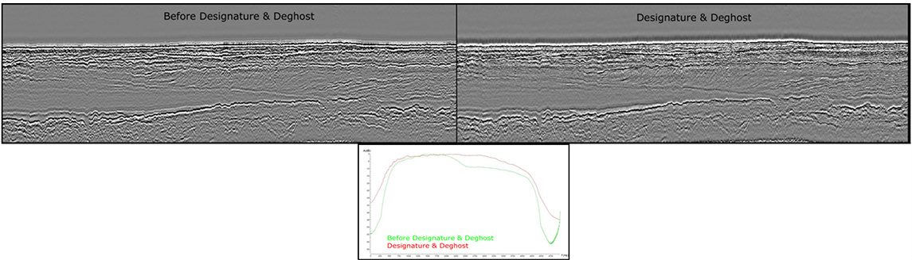
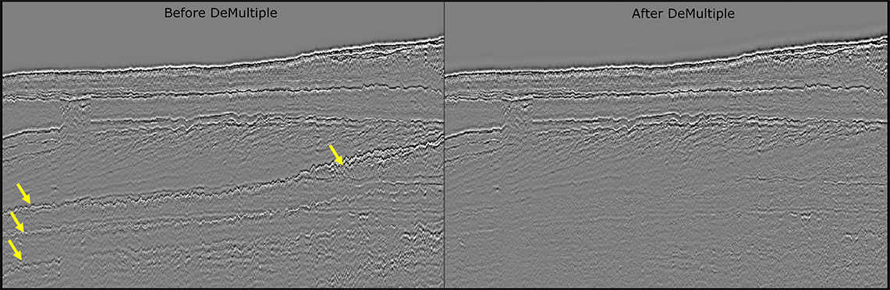
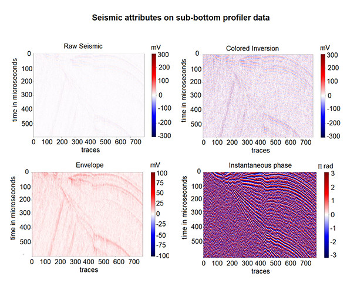

<!DOCTYPE html>
<html lang="en">
  <head>
    <meta charset="UTF-8">
    <meta http-equiv="X-UA-Compatible" content="IE=edge">
    <meta name="viewport" content="width=device-width, initial-scale=1.0">
    <title>Shallow Geo - Site</title>
    <link href="src/fonts/fontawesome-free-5.15.3-web/css/all.min.css" rel="stylesheet">
    <link href="src/css/styles.css" rel="stylesheet">
    <script src="https://code.jquery.com/jquery-3.6.0.min.js" integrity="sha256-/xUj+3OJU5yExlq6GSYGSHk7tPXikynS7ogEvDej/m4=" crossorigin="anonymous"></script>
    <script src="src/js/main.js"></script>
  </head>
  <body></body>
</html>
<header>
  <div class="container flex space-between">
    <section class="logo">
      <h1><a href="/"></a></h1>
    </section>
    <section class="menu">
      <ul>
        <li class="about has-submenu"><a href="#">about</a>
          <ul class="sub-menu">
            <li><a href="/about.html">history</a></li>
            <li><a href="/technology.html">Technology</a></li>
          </ul>
        </li>
        <li class="services"><a href="/services.html">services</a></li>
        <li class="contact"><a href="/contact.html">contact us</a></li>
        <li class="linkedin"><a href="https://www.linkedin.com/company/shallowgeo/" target="_blank"><i class="fab fa-linkedin"></i></a></li>
      </ul>
    </section>
  </div>
</header><span class="before"></span>
<main class="services">
  <section class="top">
    <div class="container flex space-between">
      <div>
        <h1>
           Services</h1>
        <p> <span>Quality Control and Quality Assurance <br></span>Our staff is composed of Geophysicists with 10 years of experience in field supervision, | crew management and data analysis for marine acquisition campaigns of high-resolution 
          seismic reflection, sub-bottom profilers, sidescan sonar, single and multibeam, and 
          magnetic gradiometry data.  
        </p>
      </div>
      <div></div>
    </div>
  </section>
  <section class="support">
    <div class="container flex space-between">           
      <div class="left"> 
        <h2>Acquisition Support</h2>
        <p>We ensure data is in the quality required by government guidelines as BOEM (Bureau of Ocean Energy Management) in the United States. Providing internal confidence to management and externally for the client. <br> We integrate geophysical data of geotechnical sites and produce the deliverables for the approval of QMA (Qualified Marine Archeologists) during geotechnical clearance campaigns.</p>
      </div>
      <div class="right"> 
        <h2>Field Processing</h2>
        <p class="field-processing">We design workflows oriented to field processing and dedicated to different  electroacoustic systems as Boomer, Sparker, Chirp, Parametric Echosounder and Pinger as well as single and multibeam echosounders.</p>
        <h2 class="client-representation">Client <br> Representation</h2>
      </div>
    </div>
    <div class="container">
      <p class="client-representation">We manage offshore projects and people while preparing documentation, writing reports and concerning health and safety. We understand government requirements and know how to make feasible constructions while ensuring minimal risks.</p>
    </div>
  </section>
  <section class="processing"> 
    <div class="container"> 
      <h1>Processing</h1>
      <h2>Shallowgeo is expert in all aspects of processing of geophysical data with proven experience in the following areas:</h2>
      <p> <span>Multi- and Single-Channel Seismic</span>Tide Reduction, Spherical Divergence Correction, Velocity Analysis, Residual Static Correction, Designature, DeMultiple, Denoise and Migration<span>Sub-Bottom Profiler </span>Tide and Heave Reduction, Designature, DeMultiple and Denoise<span>Magnetic Gradiometry </span>Filtering, Gradient Calculation, Analytical Signal and Targets Interpretation<span>Sidescan Sonar </span>USBL data processing, Bottom track, Gain Application, Mosaicking and Interpretation of Targets, Features and Sediments Texture.<span>Single and Multibeam </span>Tide Reduction, Ray Tracing, Patch Test, Geometrical/Statistical Filtering, Mosaicking and Interpretation of Featur</p>
    </div>
  </section>
  <section class="inversion"> 
    <div class="container">
      <h2>Interpretation and Inversion</h2>
      <div class="content flex">
        <ul> 
          <li> 
            <p> <span>Seismic Qualitative Analysis <br></span>Reflectors and Seismic Facies Mapping <br>
              Lithology <br>
              Isopach
            </p>
          </li>
          <li> 
            <p> <span>Seismic Quantitative Analysis<br></span>Data Conditioning<br>
              Correlation of Geotechnical Data with Seismic Profiles<br>
              Multi-Attribute Analysis<br>
              Spectral Decomposition<br>
              Pre-Stack and Pos-Stack Inversion<br>
              Seismic Attributes dedicated to shallow risks
            </p>
          </li>
          <li> 
            <p> <span>Magnetic Field Modeling <br></span>Shape of Source <br>
              Depth of Source <br>
              Ferrous Mass Estimation <br>
            </p>
          </li>
        </ul>
      </div>
    </div>
  </section>
  <section class="preparation"> 
    <div class="container flex space-between">
      <div class="left"> 
        <h2>
           Technical <br>
          Document <br>
          Preparation
        </h2>
      </div>
      <div class="right"> 
        <ul> 
          <li>Technical Reports                    </li>
          <li>Desktop Studies</li>
          <li>Site Characterization</li>
          <li>Cable Route Design</li>
        </ul>
      </div>
    </div>
  </section>
</main>
<footer>
  <div class="container">
    <h1>Contact</h1>
    <div class="row flex flex-wrap">
      <div class="left">
        <section class="office flex space-between">
          <div class="br"> 
            <div class="contact"> 
              <div class="title">Brazil Office </div>+55 21 3356-5699 <br>
              info@shallowgeo.com
            </div>
          </div>
          <div class="pt">
            <div class="contact"> 
              <div class="title">Portugal Office </div>+351 961 304 470 <br>
              info@shallowgeo.com
            </div>
          </div>
        </section>
      </div>
      <div class="right">
        <section class="f-menu"> 
          <ul> 
            <li> <a href="">about </a></li>
            <li> <a href="">services </a></li>
            <li> <a href="">contact us</a></li>
          </ul>
        </section>
      </div>
      <section class="social flex"><i class="fab fa-linkedin"></i>
        <div>
          <h2>Social networks:</h2><a href="http://linkedin.com/company/shallowgeo"> www.linkedin.com/company/shallowgeo</a>
        </div>
      </section>
    </div>
  </div>
  <section class="copyright"> 
    <div class="container"> 
      <p>© Copyright 2021 Shallow Geo. All rights reserved.</p>
    </div>
  </section>
</footer>